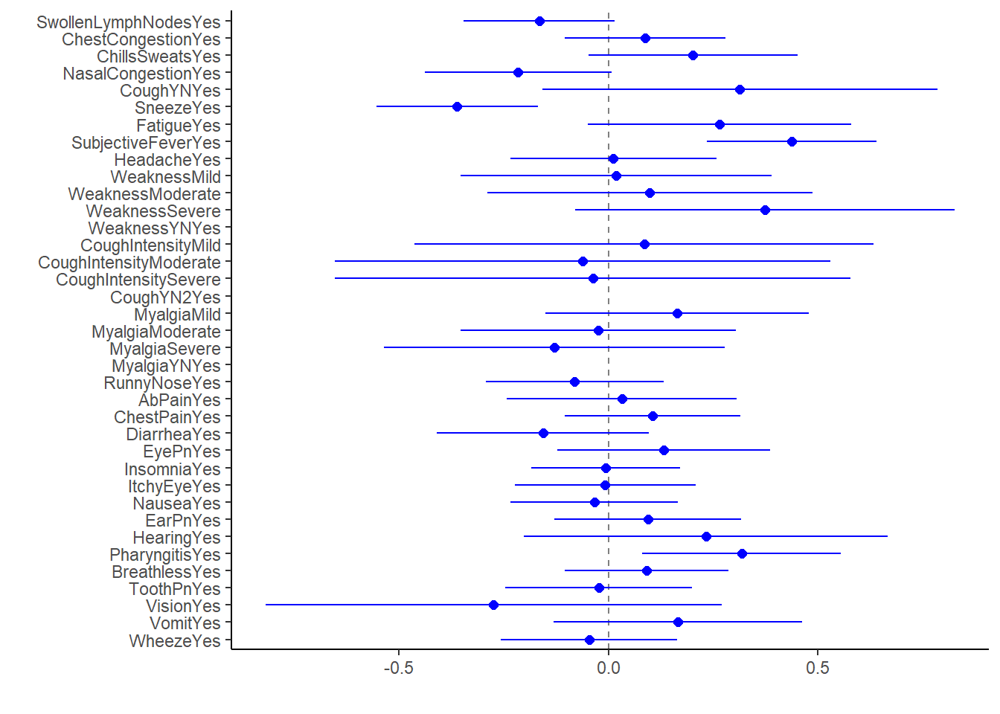

This exercise focuses on applying the base TidyModels framework to the influenza data, and most of the code comes from the TidyModels’ “Build a Model” Tutorial.
The raw data for this exercise comes from the following citation: McKay, Brian et al. (2020), Virulence-mediated infectiousness and activity trade-offs and their impact on transmission potential of patients infected with influenza, Dryad, Dataset, https://doi.org/10.5061/dryad.51c59zw4v.
The processed data was produced on the Data Processing page.
Within this analysis, the following definitions exist:
The overall steps of this exercise are as follows:
The following R packages are required for this exercise:
Load the data created on the Data Processing page.
# path to data
# note the use of the here() package and not absolute paths
data_location <- here::here("data","flu","processeddata.rds")
# load data using the "ReadRDS" function in base R.
mydata <- base::readRDS(data_location)For a more robust exploration, refer to the Exploratory Data Analysis page. However, for reference, we can look at the dataframe summary using the skimr package.
#summary of data using skimr package
skimr::skim(mydata)| Name | mydata |
| Number of rows | 730 |
| Number of columns | 32 |
| _______________________ | |
| Column type frequency: | |
| factor | 31 |
| numeric | 1 |
| ________________________ | |
| Group variables | None |
Variable type: factor
| skim_variable | n_missing | complete_rate | ordered | n_unique | top_counts |
|---|---|---|---|---|---|
| SwollenLymphNodes | 0 | 1 | FALSE | 2 | No: 418, Yes: 312 |
| ChestCongestion | 0 | 1 | FALSE | 2 | Yes: 407, No: 323 |
| ChillsSweats | 0 | 1 | FALSE | 2 | Yes: 600, No: 130 |
| NasalCongestion | 0 | 1 | FALSE | 2 | Yes: 563, No: 167 |
| CoughYN | 0 | 1 | FALSE | 2 | Yes: 655, No: 75 |
| Sneeze | 0 | 1 | FALSE | 2 | Yes: 391, No: 339 |
| Fatigue | 0 | 1 | FALSE | 2 | Yes: 666, No: 64 |
| SubjectiveFever | 0 | 1 | FALSE | 2 | Yes: 500, No: 230 |
| Headache | 0 | 1 | FALSE | 2 | Yes: 615, No: 115 |
| Weakness | 0 | 1 | FALSE | 4 | Mod: 338, Mil: 223, Sev: 120, Non: 49 |
| WeaknessYN | 0 | 1 | FALSE | 2 | Yes: 681, No: 49 |
| CoughIntensity | 0 | 1 | FALSE | 4 | Mod: 357, Sev: 172, Mil: 154, Non: 47 |
| CoughYN2 | 0 | 1 | FALSE | 2 | Yes: 683, No: 47 |
| Myalgia | 0 | 1 | FALSE | 4 | Mod: 325, Mil: 213, Sev: 113, Non: 79 |
| MyalgiaYN | 0 | 1 | FALSE | 2 | Yes: 651, No: 79 |
| RunnyNose | 0 | 1 | FALSE | 2 | Yes: 519, No: 211 |
| AbPain | 0 | 1 | FALSE | 2 | No: 639, Yes: 91 |
| ChestPain | 0 | 1 | FALSE | 2 | No: 497, Yes: 233 |
| Diarrhea | 0 | 1 | FALSE | 2 | No: 631, Yes: 99 |
| EyePn | 0 | 1 | FALSE | 2 | No: 617, Yes: 113 |
| Insomnia | 0 | 1 | FALSE | 2 | Yes: 415, No: 315 |
| ItchyEye | 0 | 1 | FALSE | 2 | No: 551, Yes: 179 |
| Nausea | 0 | 1 | FALSE | 2 | No: 475, Yes: 255 |
| EarPn | 0 | 1 | FALSE | 2 | No: 568, Yes: 162 |
| Hearing | 0 | 1 | FALSE | 2 | No: 700, Yes: 30 |
| Pharyngitis | 0 | 1 | FALSE | 2 | Yes: 611, No: 119 |
| Breathless | 0 | 1 | FALSE | 2 | No: 436, Yes: 294 |
| ToothPn | 0 | 1 | FALSE | 2 | No: 565, Yes: 165 |
| Vision | 0 | 1 | FALSE | 2 | No: 711, Yes: 19 |
| Vomit | 0 | 1 | FALSE | 2 | No: 652, Yes: 78 |
| Wheeze | 0 | 1 | FALSE | 2 | No: 510, Yes: 220 |
Variable type: numeric
| skim_variable | n_missing | complete_rate | mean | sd | p0 | p25 | p50 | p75 | p100 | hist |
|---|---|---|---|---|---|---|---|---|---|---|
| BodyTemp | 0 | 1 | 98.94 | 1.2 | 97.2 | 98.2 | 98.5 | 99.3 | 103.1 | ▇▇▂▁▁ |
The first linear model to create is a simple one using the continuous outcome of interest (BodyTemp) and main predictor of interest (RunnyNose). Using the parsnip package, specify the functional form of the model (linear regression) and method for fitting the model, aka engine (“lm”).
#save the model object as lm_mod
lm_mod <-
parsnip::linear_reg() %>%
parsnip::set_engine("lm")Now estimate the model using the fit function and summarize the linear model.
lm_fit1 <- lm_mod %>%
fit(BodyTemp ~ RunnyNose, data = mydata)
#summarize linear model
lm_fit1_summary <- broom.mixed::tidy(lm_fit1)
lm_fit1_summary## # A tibble: 2 x 5
## term estimate std.error statistic p.value
## <chr> <dbl> <dbl> <dbl> <dbl>
## 1 (Intercept) 99.1 0.0819 1210. 0
## 2 RunnyNoseYes -0.293 0.0971 -3.01 0.00268The intercept estimate (no runny nose) is 99.1F, which would make these patients febrile. We can interpret the slope estimate as: Patients with a runny nose on average have a 0.293F lower body temperature than patients without a runny nose.
Next, we can create a box and whisker plot for lm_fit1 output.
lm_fit1_bp <- broom.mixed::tidy(lm_fit1) %>%
dotwhisker::dwplot(dot_args = list(size = 2, color = "blue"),
whisker_args = list(color = "blue"),
vline = geom_vline(xintercept = 0, colour = "grey50", linetype = 2))
lm_fit1_bpThis shows us the estimate is significant (i.e. doesn’t cross the null hypothesis), and runny nose is a protective factor against increased body temperature.
Last, we can use the glance function to examine goodness of fit measures.
lm_fit1_gf <- modelsummary::glance(lm_fit1)
lm_fit1_gf## # A tibble: 1 x 12
## r.squared adj.r.squared sigma statistic p.value df logLik AIC BIC
## <dbl> <dbl> <dbl> <dbl> <dbl> <dbl> <dbl> <dbl> <dbl>
## 1 0.0123 0.0110 1.19 9.08 0.00268 1 -1162. 2329. 2343.
## # ... with 3 more variables: deviance <dbl>, df.residual <int>, nobs <int>This model has an extremely low R^2, high AIC, BIC.
The second linear model to create includes all variables in the dataset as predictors with the main outcome of interest as BodyTemp. We can use the same lm_mod function, so no need to respecify.
#create model including all predictors (defined using the . instead of specifying all variable names)
#doesn't include interaction terms
lm_fit2 <- lm_mod %>%
fit(BodyTemp ~ ., data = mydata)Now we can summarize the full linear model
#add print function to show all rows
lm_fit2_summary <- print(broom.mixed::tidy(lm_fit2), n = 38)## # A tibble: 38 x 5
## term estimate std.error statistic p.value
## <chr> <dbl> <dbl> <dbl> <dbl>
## 1 (Intercept) 97.9 0.304 322. 0
## 2 SwollenLymphNodesYes -0.165 0.0920 -1.80 0.0727
## 3 ChestCongestionYes 0.0873 0.0975 0.895 0.371
## 4 ChillsSweatsYes 0.201 0.127 1.58 0.114
## 5 NasalCongestionYes -0.216 0.114 -1.90 0.0584
## 6 CoughYNYes 0.314 0.241 1.30 0.193
## 7 SneezeYes -0.362 0.0983 -3.68 0.000249
## 8 FatigueYes 0.265 0.161 1.65 0.0996
## 9 SubjectiveFeverYes 0.437 0.103 4.22 0.0000271
## 10 HeadacheYes 0.0115 0.125 0.0913 0.927
## 11 WeaknessMild 0.0182 0.189 0.0964 0.923
## 12 WeaknessModerate 0.0989 0.198 0.500 0.617
## 13 WeaknessSevere 0.373 0.231 1.62 0.106
## 14 WeaknessYNYes NA NA NA NA
## 15 CoughIntensityMild 0.0849 0.280 0.303 0.762
## 16 CoughIntensityModerate -0.0614 0.302 -0.203 0.839
## 17 CoughIntensitySevere -0.0373 0.314 -0.119 0.906
## 18 CoughYN2Yes NA NA NA NA
## 19 MyalgiaMild 0.164 0.160 1.02 0.307
## 20 MyalgiaModerate -0.0241 0.168 -0.143 0.886
## 21 MyalgiaSevere -0.129 0.208 -0.622 0.534
## 22 MyalgiaYNYes NA NA NA NA
## 23 RunnyNoseYes -0.0805 0.109 -0.742 0.459
## 24 AbPainYes 0.0316 0.140 0.225 0.822
## 25 ChestPainYes 0.105 0.107 0.982 0.326
## 26 DiarrheaYes -0.157 0.130 -1.21 0.227
## 27 EyePnYes 0.132 0.130 1.01 0.311
## 28 InsomniaYes -0.00682 0.0908 -0.0752 0.940
## 29 ItchyEyeYes -0.00802 0.110 -0.0727 0.942
## 30 NauseaYes -0.0341 0.102 -0.334 0.739
## 31 EarPnYes 0.0938 0.114 0.824 0.410
## 32 HearingYes 0.232 0.222 1.05 0.296
## 33 PharyngitisYes 0.318 0.121 2.62 0.00906
## 34 BreathlessYes 0.0905 0.0998 0.907 0.365
## 35 ToothPnYes -0.0229 0.114 -0.201 0.841
## 36 VisionYes -0.275 0.278 -0.989 0.323
## 37 VomitYes 0.165 0.151 1.09 0.275
## 38 WheezeYes -0.0467 0.107 -0.436 0.663lm_fit2_summary## # A tibble: 38 x 5
## term estimate std.error statistic p.value
## <chr> <dbl> <dbl> <dbl> <dbl>
## 1 (Intercept) 97.9 0.304 322. 0
## 2 SwollenLymphNodesYes -0.165 0.0920 -1.80 0.0727
## 3 ChestCongestionYes 0.0873 0.0975 0.895 0.371
## 4 ChillsSweatsYes 0.201 0.127 1.58 0.114
## 5 NasalCongestionYes -0.216 0.114 -1.90 0.0584
## 6 CoughYNYes 0.314 0.241 1.30 0.193
## 7 SneezeYes -0.362 0.0983 -3.68 0.000249
## 8 FatigueYes 0.265 0.161 1.65 0.0996
## 9 SubjectiveFeverYes 0.437 0.103 4.22 0.0000271
## 10 HeadacheYes 0.0115 0.125 0.0913 0.927
## # ... with 28 more rows#the NA lines are where all patients are reporting the symptom (so no comparison possibility)
#export results into a table using the gtsummary package
gtsummary::tbl_regression(lm_fit2)## Extracting {parsnip} model fit with `tbl_regression(x = x$fit, ...)`| Characteristic | Beta | 95% CI1 | p-value |
|---|---|---|---|
| SwollenLymphNodes | |||
| No | — | — | |
| Yes | -0.17 | -0.35, 0.02 | 0.073 |
| ChestCongestion | |||
| No | — | — | |
| Yes | 0.09 | -0.10, 0.28 | 0.4 |
| ChillsSweats | |||
| No | — | — | |
| Yes | 0.20 | -0.05, 0.45 | 0.11 |
| NasalCongestion | |||
| No | — | — | |
| Yes | -0.22 | -0.44, 0.01 | 0.058 |
| CoughYN | |||
| No | — | — | |
| Yes | 0.31 | -0.16, 0.79 | 0.2 |
| Sneeze | |||
| No | — | — | |
| Yes | -0.36 | -0.55, -0.17 | <0.001 |
| Fatigue | |||
| No | — | — | |
| Yes | 0.26 | -0.05, 0.58 | 0.10 |
| SubjectiveFever | |||
| No | — | — | |
| Yes | 0.44 | 0.23, 0.64 | <0.001 |
| Headache | |||
| No | — | — | |
| Yes | 0.01 | -0.23, 0.26 | >0.9 |
| Weakness | |||
| None | — | — | |
| Mild | 0.02 | -0.35, 0.39 | >0.9 |
| Moderate | 0.10 | -0.29, 0.49 | 0.6 |
| Severe | 0.37 | -0.08, 0.83 | 0.11 |
| WeaknessYN | |||
| No | — | — | |
| Yes | |||
| CoughIntensity | |||
| None | — | — | |
| Mild | 0.08 | -0.46, 0.63 | 0.8 |
| Moderate | -0.06 | -0.65, 0.53 | 0.8 |
| Severe | -0.04 | -0.65, 0.58 | >0.9 |
| CoughYN2 | |||
| No | — | — | |
| Yes | |||
| Myalgia | |||
| None | — | — | |
| Mild | 0.16 | -0.15, 0.48 | 0.3 |
| Moderate | -0.02 | -0.35, 0.31 | 0.9 |
| Severe | -0.13 | -0.54, 0.28 | 0.5 |
| MyalgiaYN | |||
| No | — | — | |
| Yes | |||
| RunnyNose | |||
| No | — | — | |
| Yes | -0.08 | -0.29, 0.13 | 0.5 |
| AbPain | |||
| No | — | — | |
| Yes | 0.03 | -0.24, 0.31 | 0.8 |
| ChestPain | |||
| No | — | — | |
| Yes | 0.11 | -0.10, 0.32 | 0.3 |
| Diarrhea | |||
| No | — | — | |
| Yes | -0.16 | -0.41, 0.10 | 0.2 |
| EyePn | |||
| No | — | — | |
| Yes | 0.13 | -0.12, 0.39 | 0.3 |
| Insomnia | |||
| No | — | — | |
| Yes | -0.01 | -0.19, 0.17 | >0.9 |
| ItchyEye | |||
| No | — | — | |
| Yes | -0.01 | -0.22, 0.21 | >0.9 |
| Nausea | |||
| No | — | — | |
| Yes | -0.03 | -0.23, 0.17 | 0.7 |
| EarPn | |||
| No | — | — | |
| Yes | 0.09 | -0.13, 0.32 | 0.4 |
| Hearing | |||
| No | — | — | |
| Yes | 0.23 | -0.20, 0.67 | 0.3 |
| Pharyngitis | |||
| No | — | — | |
| Yes | 0.32 | 0.08, 0.56 | 0.009 |
| Breathless | |||
| No | — | — | |
| Yes | 0.09 | -0.11, 0.29 | 0.4 |
| ToothPn | |||
| No | — | — | |
| Yes | -0.02 | -0.25, 0.20 | 0.8 |
| Vision | |||
| No | — | — | |
| Yes | -0.27 | -0.82, 0.27 | 0.3 |
| Vomit | |||
| No | — | — | |
| Yes | 0.17 | -0.13, 0.46 | 0.3 |
| Wheeze | |||
| No | — | — | |
| Yes | -0.05 | -0.26, 0.16 | 0.7 |
|
1
CI = Confidence Interval
|
|||
Within this fit, significant predictors at alpha = 0.05 are Sneeze, SubjectiveFever, & Pharyngitis.
Now we can create a box and whisker plot for lm_fit2 output.
lm_fit2_bp1 <- broom.mixed::tidy(lm_fit2) %>%
dotwhisker::dwplot(dot_args = list(size = 2, color = "blue"),
whisker_args = list(color = "blue"),
vline = geom_vline(xintercept = 0, colour = "grey50", linetype = 2))
lm_fit2_bp1
#there's a lot of information here, but hard to identify the ones that are significant due to volume
#box and whisker plot for lm_fit2 significant predictors
#first filter significant results
lm_fit2_sig <- broom.mixed::tidy(lm_fit2) %>%
dplyr::filter(p.value < 0.05)
#box and whisker plot for lm_fit2 significant predictors
lm_fit2_bp2 <- lm_fit2_sig %>%
dotwhisker::dwplot(dot_args = list(size = 2, color = "blue"),
whisker_args = list(color = "blue"),
vline = geom_vline(xintercept = 0, colour = "grey50", linetype = 2))
lm_fit2_bp2Last, we can use the glance function to examine goodness of fit measures
lm_fit2_gf <- modelsummary::glance(lm_fit2)
lm_fit2_gf## # A tibble: 1 x 12
## r.squared adj.r.squared sigma statistic p.value df logLik AIC BIC
## <dbl> <dbl> <dbl> <dbl> <dbl> <dbl> <dbl> <dbl> <dbl>
## 1 0.129 0.0860 1.14 3.02 0.0000000420 34 -1116. 2304. 2469.
## # ... with 3 more variables: deviance <dbl>, df.residual <int>, nobs <int>In comparison to lm_fit1, this model has an increased R^2, slightly lower AIC, BIC, but we need the formal comparison to better understand the significance.
First, we want to combine results of the two models into one table.
#create a list of the two models
lm_models <- list(lm_fit1, lm_fit2)
#using the model summary package
#list estimate, 95% confidence intervals, and highlight ones with significant p-values
#hide intercept estimate
modelsummary::modelsummary(lm_models,
stars = TRUE,
fmt = '%.3f',
estimate = "{estimate} [{conf.low}, {conf.high}] {stars}",
statistic = NULL,
coef_omit = "Intercept")## Warning: In version 0.8.0 of the `modelsummary` package, the default significance markers produced by the `stars=TRUE` argument were changed to be consistent with R's defaults.
## This warning is displayed once per session.| Model 1 | Model 2 | |
|---|---|---|
| RunnyNoseYes | -0.293 [-0.483, -0.102] ** | -0.080 [-0.294, 0.133] |
| SwollenLymphNodesYes | -0.165 [-0.346, 0.015] + | |
| ChestCongestionYes | 0.087 [-0.104, 0.279] | |
| ChillsSweatsYes | 0.201 [-0.049, 0.451] | |
| NasalCongestionYes | -0.216 [-0.439, 0.008] + | |
| CoughYNYes | 0.314 [-0.159, 0.787] | |
| SneezeYes | -0.362 [-0.555, -0.169] *** | |
| FatigueYes | 0.265 [-0.050, 0.580] + | |
| SubjectiveFeverYes | 0.437 [0.234, 0.640] *** | |
| HeadacheYes | 0.011 [-0.235, 0.258] | |
| WeaknessMild | 0.018 [-0.353, 0.390] | |
| WeaknessModerate | 0.099 [-0.290, 0.487] | |
| WeaknessSevere | 0.373 [-0.080, 0.827] | |
| WeaknessYNYes | ||
| CoughIntensityMild | 0.085 [-0.465, 0.634] | |
| CoughIntensityModerate | -0.061 [-0.654, 0.532] | |
| CoughIntensitySevere | -0.037 [-0.654, 0.579] | |
| CoughYN2Yes | ||
| MyalgiaMild | 0.164 [-0.151, 0.479] | |
| MyalgiaModerate | -0.024 [-0.354, 0.305] | |
| MyalgiaSevere | -0.129 [-0.537, 0.279] | |
| MyalgiaYNYes | ||
| AbPainYes | 0.032 [-0.244, 0.307] | |
| ChestPainYes | 0.105 [-0.105, 0.315] | |
| DiarrheaYes | -0.157 [-0.411, 0.098] | |
| EyePnYes | 0.132 [-0.123, 0.386] | |
| InsomniaYes | -0.007 [-0.185, 0.171] | |
| ItchyEyeYes | -0.008 [-0.224, 0.208] | |
| NauseaYes | -0.034 [-0.234, 0.166] | |
| EarPnYes | 0.094 [-0.130, 0.317] | |
| HearingYes | 0.232 [-0.204, 0.668] | |
| PharyngitisYes | 0.318 [0.079, 0.556] ** | |
| BreathlessYes | 0.091 [-0.105, 0.287] | |
| ToothPnYes | -0.023 [-0.246, 0.200] | |
| VisionYes | -0.275 [-0.820, 0.271] | |
| VomitYes | 0.165 [-0.132, 0.463] | |
| WheezeYes | -0.047 [-0.257, 0.163] | |
| Num.Obs. | 730 | 730 |
| R2 | 0.012 | 0.129 |
| R2 Adj. | 0.011 | 0.086 |
| AIC | 2329.3 | 2303.8 |
| BIC | 2343.1 | 2469.2 |
| Log.Lik. | -1161.673 | -1115.920 |
In this comparison, we can see the significance of the runny nose estimate decreases, the runny nose Beta estimate gets closer to zero. Moreover, in comparison to lm_fit1, lm_fit2 has increased R^2, slightly lower AIC, BIC, log likelihood.
Next, we can conduct an ANOVA to formally compare the two linear regression models
lm_anova <- anova(lm_fit1$fit, lm_fit2$fit, test = "Chisq")
lm_anova## Analysis of Variance Table
##
## Model 1: BodyTemp ~ RunnyNose
## Model 2: BodyTemp ~ SwollenLymphNodes + ChestCongestion + ChillsSweats +
## NasalCongestion + CoughYN + Sneeze + Fatigue + SubjectiveFever +
## Headache + Weakness + WeaknessYN + CoughIntensity + CoughYN2 +
## Myalgia + MyalgiaYN + RunnyNose + AbPain + ChestPain + Diarrhea +
## EyePn + Insomnia + ItchyEye + Nausea + EarPn + Hearing +
## Pharyngitis + Breathless + ToothPn + Vision + Vomit + Wheeze
## Res.Df RSS Df Sum of Sq Pr(>Chi)
## 1 728 1030.53
## 2 695 909.12 33 121.41 0.0000001357 ***
## ---
## Signif. codes: 0 '***' 0.001 '**' 0.01 '*' 0.05 '.' 0.1 ' ' 1Based on the p-value from the ANOVA, we can conclude the more complex model better describes the data than the SLR. This is also supported by the comparison of AIC and BIC above.
The next model to create is a simple one using the categorical outcome of interest (Nausea) and main predictor of interest (RunnyNose). Using the parsnip package, specify the functional form of the model (logistic regression) and method for fitting the model, aka engine (“glm”)
#save the model object as log_mod
log_mod <-
parsnip::logistic_reg() %>%
parsnip::set_engine("glm")We can now estimate the model using the fit function.
log_fit1 <- log_mod %>%
fit(Nausea ~ RunnyNose, data = mydata)Next, we can summarize logistic model with the tidy function. However, we want to exponentiate estimates to make them interpretable odds ratios.
log_fit1_summary <- broom.mixed::tidy(log_fit1, exponentiate = TRUE)
log_fit1_summary## # A tibble: 2 x 5
## term estimate std.error statistic p.value
## <chr> <dbl> <dbl> <dbl> <dbl>
## 1 (Intercept) 0.518 0.145 -4.53 0.00000589
## 2 RunnyNoseYes 1.05 0.172 0.292 0.770This does not yield a significant estimate (p > 0.05).
Now, we can create a box and whisker plot for log_fit1 output.
log_fit1_bp <- broom.mixed::tidy(log_fit1) %>%
dotwhisker::dwplot(dot_args = list(size = 2, color = "blue"),
whisker_args = list(color = "blue"),
vline = geom_vline(xintercept = 0, colour = "grey50", linetype = 2))
log_fit1_bpThis doesn’t really mean much since we only have one category beyond not significant results.
Lastly, we can use the glance function to examine goodness of fit measures.
log_fit1_gf <-modelsummary::glance(log_fit1)
log_fit1_gf ## # A tibble: 1 x 8
## null.deviance df.null logLik AIC BIC deviance df.residual nobs
## <dbl> <int> <dbl> <dbl> <dbl> <dbl> <int> <int>
## 1 945. 729 -472. 949. 958. 945. 728 730We can see this fit has a lower AIC, BIC, loglikelihood than linear model. This is obviously not a direct comparison but still an interesting result.
The second logistic model to create includes all variables in the dataset as predictors with the main outcome of interest as Nausea. We can use the same log_mod function, so no need to respecify. We first want to create model including all predictors (defined using the . instead of specifying all variable names).
#doesn't include interaction terms
log_fit2 <- log_mod %>%
fit(Nausea ~ ., data = mydata)Next, we can summarize logistic model with the tidy function. However, we want to exponentiate estimates to make them interpretable odds ratios.
#adding the print function to see all rows
log_fit2_summary <- print(broom.mixed::tidy(log_fit2, exponentiate = TRUE), n = 38)## # A tibble: 38 x 5
## term estimate std.error statistic p.value
## <chr> <dbl> <dbl> <dbl> <dbl>
## 1 (Intercept) 1.25 7.83 0.0285 9.77e- 1
## 2 SwollenLymphNodesYes 0.778 0.196 -1.28 2.00e- 1
## 3 ChestCongestionYes 1.32 0.213 1.30 1.95e- 1
## 4 ChillsSweatsYes 1.32 0.288 0.952 3.41e- 1
## 5 NasalCongestionYes 1.53 0.255 1.67 9.44e- 2
## 6 CoughYNYes 0.869 0.519 -0.271 7.87e- 1
## 7 SneezeYes 1.19 0.210 0.840 4.01e- 1
## 8 FatigueYes 1.26 0.372 0.616 5.38e- 1
## 9 SubjectiveFeverYes 1.32 0.225 1.23 2.18e- 1
## 10 HeadacheYes 1.39 0.285 1.16 2.45e- 1
## 11 WeaknessMild 0.885 0.447 -0.272 7.86e- 1
## 12 WeaknessModerate 1.36 0.454 0.684 4.94e- 1
## 13 WeaknessSevere 2.28 0.510 1.61 1.07e- 1
## 14 WeaknessYNYes NA NA NA NA
## 15 CoughIntensityMild 0.802 0.584 -0.378 7.06e- 1
## 16 CoughIntensityModerate 0.696 0.631 -0.574 5.66e- 1
## 17 CoughIntensitySevere 0.387 0.658 -1.44 1.49e- 1
## 18 CoughYN2Yes NA NA NA NA
## 19 MyalgiaMild 0.996 0.368 -0.0113 9.91e- 1
## 20 MyalgiaModerate 1.23 0.373 0.549 5.83e- 1
## 21 MyalgiaSevere 1.13 0.445 0.271 7.86e- 1
## 22 MyalgiaYNYes NA NA NA NA
## 23 RunnyNoseYes 1.05 0.233 0.195 8.46e- 1
## 24 AbPainYes 2.56 0.281 3.34 8.46e- 4
## 25 ChestPainYes 1.07 0.228 0.311 7.56e- 1
## 26 DiarrheaYes 2.90 0.259 4.11 3.91e- 5
## 27 EyePnYes 0.710 0.278 -1.23 2.18e- 1
## 28 InsomniaYes 1.09 0.193 0.436 6.63e- 1
## 29 ItchyEyeYes 0.939 0.233 -0.273 7.85e- 1
## 30 EarPnYes 0.834 0.239 -0.760 4.47e- 1
## 31 HearingYes 1.38 0.452 0.714 4.75e- 1
## 32 PharyngitisYes 1.32 0.266 1.03 3.01e- 1
## 33 BreathlessYes 1.69 0.209 2.53 1.15e- 2
## 34 ToothPnYes 1.62 0.229 2.09 3.62e- 2
## 35 VisionYes 1.13 0.541 0.232 8.17e- 1
## 36 VomitYes 11.7 0.349 7.05 1.76e-12
## 37 WheezeYes 0.738 0.234 -1.30 1.93e- 1
## 38 BodyTemp 0.969 0.0798 -0.391 6.96e- 1log_fit2_summary## # A tibble: 38 x 5
## term estimate std.error statistic p.value
## <chr> <dbl> <dbl> <dbl> <dbl>
## 1 (Intercept) 1.25 7.83 0.0285 0.977
## 2 SwollenLymphNodesYes 0.778 0.196 -1.28 0.200
## 3 ChestCongestionYes 1.32 0.213 1.30 0.195
## 4 ChillsSweatsYes 1.32 0.288 0.952 0.341
## 5 NasalCongestionYes 1.53 0.255 1.67 0.0944
## 6 CoughYNYes 0.869 0.519 -0.271 0.787
## 7 SneezeYes 1.19 0.210 0.840 0.401
## 8 FatigueYes 1.26 0.372 0.616 0.538
## 9 SubjectiveFeverYes 1.32 0.225 1.23 0.218
## 10 HeadacheYes 1.39 0.285 1.16 0.245
## # ... with 28 more rows#the NA lines are where all patients are reporting the symptom (so no comparison possibility)
#export results into a table using the gtsummary package
log_fit2_gtsummary <- gtsummary::tbl_regression(log_fit2, exponentiate = TRUE)## Extracting {parsnip} model fit with `tbl_regression(x = x$fit, ...)`log_fit2_gtsummary| Characteristic | OR1 | 95% CI1 | p-value |
|---|---|---|---|
| SwollenLymphNodes | |||
| No | — | — | |
| Yes | 0.78 | 0.53, 1.14 | 0.2 |
| ChestCongestion | |||
| No | — | — | |
| Yes | 1.32 | 0.87, 2.00 | 0.2 |
| ChillsSweats | |||
| No | — | — | |
| Yes | 1.32 | 0.75, 2.34 | 0.3 |
| NasalCongestion | |||
| No | — | — | |
| Yes | 1.53 | 0.94, 2.54 | 0.094 |
| CoughYN | |||
| No | — | — | |
| Yes | 0.87 | 0.32, 2.49 | 0.8 |
| Sneeze | |||
| No | — | — | |
| Yes | 1.19 | 0.79, 1.81 | 0.4 |
| Fatigue | |||
| No | — | — | |
| Yes | 1.26 | 0.62, 2.69 | 0.5 |
| SubjectiveFever | |||
| No | — | — | |
| Yes | 1.32 | 0.85, 2.06 | 0.2 |
| Headache | |||
| No | — | — | |
| Yes | 1.39 | 0.81, 2.47 | 0.2 |
| Weakness | |||
| None | — | — | |
| Mild | 0.89 | 0.38, 2.22 | 0.8 |
| Moderate | 1.36 | 0.58, 3.47 | 0.5 |
| Severe | 2.28 | 0.86, 6.42 | 0.11 |
| WeaknessYN | |||
| No | — | — | |
| Yes | |||
| CoughIntensity | |||
| None | — | — | |
| Mild | 0.80 | 0.25, 2.49 | 0.7 |
| Moderate | 0.70 | 0.20, 2.37 | 0.6 |
| Severe | 0.39 | 0.10, 1.38 | 0.15 |
| CoughYN2 | |||
| No | — | — | |
| Yes | |||
| Myalgia | |||
| None | — | — | |
| Mild | 1.00 | 0.49, 2.09 | >0.9 |
| Moderate | 1.23 | 0.60, 2.61 | 0.6 |
| Severe | 1.13 | 0.48, 2.73 | 0.8 |
| MyalgiaYN | |||
| No | — | — | |
| Yes | |||
| RunnyNose | |||
| No | — | — | |
| Yes | 1.05 | 0.66, 1.66 | 0.8 |
| AbPain | |||
| No | — | — | |
| Yes | 2.56 | 1.48, 4.47 | <0.001 |
| ChestPain | |||
| No | — | — | |
| Yes | 1.07 | 0.68, 1.67 | 0.8 |
| Diarrhea | |||
| No | — | — | |
| Yes | 2.90 | 1.75, 4.83 | <0.001 |
| EyePn | |||
| No | — | — | |
| Yes | 0.71 | 0.41, 1.22 | 0.2 |
| Insomnia | |||
| No | — | — | |
| Yes | 1.09 | 0.75, 1.59 | 0.7 |
| ItchyEye | |||
| No | — | — | |
| Yes | 0.94 | 0.59, 1.48 | 0.8 |
| EarPn | |||
| No | — | — | |
| Yes | 0.83 | 0.52, 1.33 | 0.4 |
| Hearing | |||
| No | — | — | |
| Yes | 1.38 | 0.56, 3.33 | 0.5 |
| Pharyngitis | |||
| No | — | — | |
| Yes | 1.32 | 0.79, 2.24 | 0.3 |
| Breathless | |||
| No | — | — | |
| Yes | 1.69 | 1.12, 2.55 | 0.012 |
| ToothPn | |||
| No | — | — | |
| Yes | 1.62 | 1.03, 2.54 | 0.036 |
| Vision | |||
| No | — | — | |
| Yes | 1.13 | 0.38, 3.29 | 0.8 |
| Vomit | |||
| No | — | — | |
| Yes | 11.7 | 6.07, 24.0 | <0.001 |
| Wheeze | |||
| No | — | — | |
| Yes | 0.74 | 0.46, 1.16 | 0.2 |
| BodyTemp | 0.97 | 0.83, 1.13 | 0.7 |
|
1
OR = Odds Ratio, CI = Confidence Interval
|
|||
In this model, the significant predictors at alpha = 0.05 are AbPain, Diarrhea, Breathless, ToothPn, and Vomit. Vomit and Diarrhea makes sense as they often co-present with nausea, and abdominal pain as well as breathlessness make clinical sense. Tooth pain is a surprising result.
Now we can create a box and whisker plot for log_fit2 output.
log_fit2_bp1 <- broom.mixed::tidy(log_fit2) %>%
dotwhisker::dwplot(dot_args = list(size = 2, color = "blue"),
whisker_args = list(color = "blue"),
vline = geom_vline(xintercept = 0, colour = "grey50", linetype = 2))
log_fit2_bp1#there's a lot of information here, but hard to identify the ones that are significant due to volume
#box and whisker plot for log_fit2 significant predictors
#first filter significant results
log_fit2_sig <- broom.mixed::tidy(log_fit2) %>%
dplyr::filter(p.value < 0.05)
#box and whisker plot for log_fit2 significant predictors
log_fit2_bp2 <- log_fit2_sig %>%
dotwhisker::dwplot(dot_args = list(size = 2, color = "blue"),
whisker_args = list(color = "blue"),
vline = geom_vline(xintercept = 0, colour = "grey50", linetype = 2))
log_fit2_bp2All significant predictors in this model increase odds of having nausea. It makes sense vomit and diarrhea have the highest OR, given the frequent co-presentation of the three symptoms.
Lastly, we can use the glance function to examine goodness of fit measures.
log_fit2_gf <- modelsummary::glance(log_fit2)
log_fit2_gf## # A tibble: 1 x 8
## null.deviance df.null logLik AIC BIC deviance df.residual nobs
## <dbl> <int> <dbl> <dbl> <dbl> <dbl> <int> <int>
## 1 945. 729 -376. 821. 982. 751. 695 730In comparison to log_fit1, this model has a lower log likelihood, AIC, BIC, deviance, but we need the formal comparison to better understand the significance.
First, we need to combine results of the two models into one table.
log_models <- list(log_fit1, log_fit2)
#list estimate, 95% confidence intervals, and highlight ones with significant p-values
#hide intercept estimate
modelsummary::modelsummary(log_models,
stars = TRUE,
fmt = '%.3f',
exponentiate = TRUE,
estimate = "{estimate} [{conf.low}, {conf.high}] {stars}",
statistic = NULL,
coef_omit = "Intercept")| Model 1 | Model 2 | |
|---|---|---|
| RunnyNoseYes | 1.051 [0.753, 1.477] | 1.046 [0.664, 1.656] |
| SwollenLymphNodesYes | 0.778 [0.528, 1.140] | |
| ChestCongestionYes | 1.317 [0.869, 2.003] | |
| ChillsSweatsYes | 1.315 [0.755, 2.339] | |
| NasalCongestionYes | 1.531 [0.935, 2.541] + | |
| CoughYNYes | 0.869 [0.321, 2.487] | |
| SneezeYes | 1.193 [0.791, 1.805] | |
| FatigueYes | 1.257 [0.621, 2.693] | |
| SubjectiveFeverYes | 1.320 [0.851, 2.063] | |
| HeadacheYes | 1.393 [0.806, 2.473] | |
| WeaknessMild | 0.885 [0.380, 2.219] | |
| WeaknessModerate | 1.365 [0.577, 3.474] | |
| WeaknessSevere | 2.278 [0.859, 6.423] | |
| WeaknessYNYes | ||
| CoughIntensityMild | 0.802 [0.249, 2.494] | |
| CoughIntensityModerate | 0.696 [0.197, 2.368] | |
| CoughIntensitySevere | 0.387 [0.104, 1.384] | |
| CoughYN2Yes | ||
| MyalgiaMild | 0.996 [0.491, 2.092] | |
| MyalgiaModerate | 1.227 [0.600, 2.607] | |
| MyalgiaSevere | 1.128 [0.475, 2.733] | |
| MyalgiaYNYes | ||
| AbPainYes | 2.558 [1.478, 4.469] *** | |
| ChestPainYes | 1.073 [0.685, 1.675] | |
| DiarrheaYes | 2.898 [1.749, 4.834] *** | |
| EyePnYes | 0.710 [0.408, 1.215] | |
| InsomniaYes | 1.088 [0.745, 1.590] | |
| ItchyEyeYes | 0.939 [0.592, 1.476] | |
| EarPnYes | 0.834 [0.519, 1.327] | |
| HearingYes | 1.381 [0.558, 3.328] | |
| PharyngitisYes | 1.317 [0.788, 2.242] | |
| BreathlessYes | 1.694 [1.125, 2.551] * | |
| ToothPnYes | 1.617 [1.030, 2.536] * | |
| VisionYes | 1.134 [0.385, 3.294] | |
| VomitYes | 11.687 [6.072, 23.999] *** | |
| WheezeYes | 0.738 [0.464, 1.162] | |
| BodyTemp | 0.969 [0.827, 1.132] | |
| Num.Obs. | 730 | 730 |
| AIC | 948.6 | 821.5 |
| BIC | 957.8 | 982.2 |
| Log.Lik. | -472.283 | -375.735 |
Interestingly, runny nose is not a significant predictor in either model. In comparison to log_fit1, log_fit2 has a slightly lower AIC and log likelihood, but higher BIC.
Next, we can conduct an ANOVA to compare the two linear regression models
log_anova <- anova(log_fit1$fit, log_fit2$fit, test = "Chisq")
log_anova## Analysis of Deviance Table
##
## Model 1: Nausea ~ RunnyNose
## Model 2: Nausea ~ SwollenLymphNodes + ChestCongestion + ChillsSweats +
## NasalCongestion + CoughYN + Sneeze + Fatigue + SubjectiveFever +
## Headache + Weakness + WeaknessYN + CoughIntensity + CoughYN2 +
## Myalgia + MyalgiaYN + RunnyNose + AbPain + ChestPain + Diarrhea +
## EyePn + Insomnia + ItchyEye + EarPn + Hearing + Pharyngitis +
## Breathless + ToothPn + Vision + Vomit + Wheeze + BodyTemp
## Resid. Df Resid. Dev Df Deviance Pr(>Chi)
## 1 728 944.57
## 2 695 751.47 33 193.09 < 0.00000000000000022 ***
## ---
## Signif. codes: 0 '***' 0.001 '**' 0.01 '*' 0.05 '.' 0.1 ' ' 1Based on the p-value from the ANOVA, we can conclude the more complex model better describes the data than the simple logistic regression, which is also supported by the comparison of measures above. However, the higher BIC suggests the significance noted may be a result from the number of parameters included in the model. In a real-world analysis, we would need to examine the potential of overfitting occurring in the full logistic regression model.